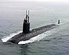

submarine

Definition: A submarine (or sub) is a watercraft capable of independent operation underwater. It differs from a submersible, which has more limited underwater capability. The term is also sometimes used historically or colloquially to refer to remotely operated vehicles and robots, as well as medium-sized or smaller vessels, such as the midget submarine and the wet sub. Submarines are referred to as boats rather than ships irrespective of their size.Although experimental submarines had been built earlier, submarine design took off during the 19th century, and they were adopted by several navies. They were first widely used during World War I (1914–1918), and are now used in many navies, large and small. Military uses include attacking enemy surface ships (merchant and military) or other submarines, and for aircraft carrier protection, blockade running, nuclear deterrence, reconnaissance, conventional land attack (for example, using a cruise missile), and covert insertion of special forces. Civilian uses include marine science, salvage, exploration, and facility inspection and maintenance. Submarines can also be modified for specialized functions such as search-and-rescue missions and undersea cable repair. They are also used in tourism and undersea archaeology. Modern deep-diving submarines derive from the bathyscaphe, which evolved from the diving bell.
Source: Wikipedia
Wikipedia Page
Wikidata Page
Occurs in: